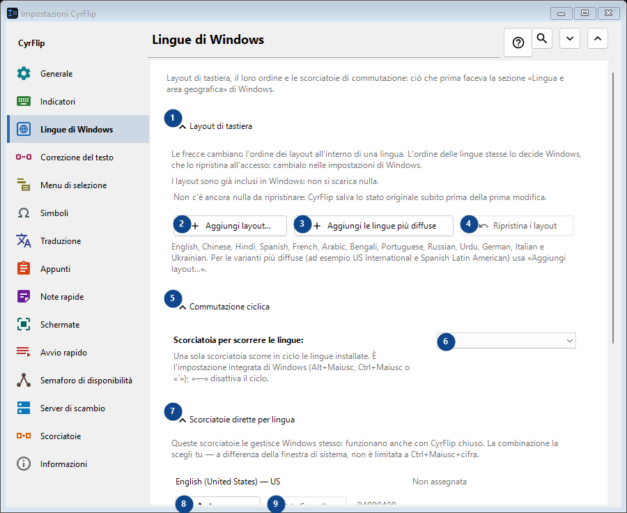
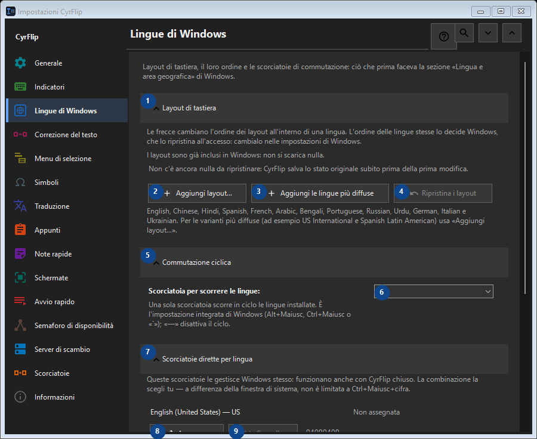

Lingue di Windows
A cosa serve
Layout di tastiera, il loro ordine e le scorciatoie di commutazione: ciò che prima faceva la sezione «Lingua e area geografica» di Windows.


Ordine delle operazioni
Le impostazioni si applicano subito. Non serve un ordine preciso; usa i gruppi qui sotto.
Elementi
1. Layout di tastiera
Usa questo comando per l’azione indicata. Leggi ogni richiesta di conferma prima di accettare.
Le tue scorciatoie2. Aggiungi layout...
Usa questo comando per l’azione indicata. Leggi ogni richiesta di conferma prima di accettare.
Le tue scorciatoie3. Aggiungi le lingue più diffuse
Usa questo comando per l’azione indicata. Leggi ogni richiesta di conferma prima di accettare.
Le tue scorciatoie4. Ripristina i layout
Non c'è ancora nulla da ripristinare: CyrFlip salva lo stato originale subito prima della prima modifica. Questo elemento non è disponibile. Attiva prima la funzione o seleziona una voce.
Le tue scorciatoie5. Commutazione ciclica
Usa questo comando per l’azione indicata. Leggi ogni richiesta di conferma prima di accettare.
Le tue scorciatoie6. Scorciatoia per scorrere le lingue
Scegli o inserisci il valore indicato dall’etichetta vicina. Controllalo prima di continuare.
Le tue scorciatoie7. Scorciatoie dirette per lingua
Usa questo comando per l’azione indicata. Leggi ogni richiesta di conferma prima di accettare.
Le tue scorciatoie8. Assegna... - English (United States) - US
Usa questo comando per l’azione indicata. Leggi ogni richiesta di conferma prima di accettare.
Le tue scorciatoie9. Cancella - English (United States) - US
Usa questo comando per l’azione indicata. Leggi ogni richiesta di conferma prima di accettare. Questo elemento non è disponibile. Attiva prima la funzione o seleziona una voce.
Le tue scorciatoie10. Assegna... - русский (Россия) - Russian
Usa questo comando per l’azione indicata. Leggi ogni richiesta di conferma prima di accettare.
Le tue scorciatoie11. Cancella - русский (Россия) - Russian
Usa questo comando per l’azione indicata. Leggi ogni richiesta di conferma prima di accettare. Questo elemento non è disponibile. Attiva prima la funzione o seleziona una voce.
Le tue scorciatoie12. Ripristina le scorciatoie
Non c'è ancora nulla da ripristinare: CyrFlip salva lo stato originale subito prima della prima modifica. Questo elemento non è disponibile. Attiva prima la funzione o seleziona una voce.
Le tue scorciatoie13. Impostazioni di Windows
Usa questo comando per l’azione indicata. Leggi ogni richiesta di conferma prima di accettare.
Le tue scorciatoie14. Apri le impostazioni di Windows
Apre le impostazioni di Windows, dove si installa una lingua di visualizzazione (la traduzione di Windows stesso).
Le tue scorciatoie